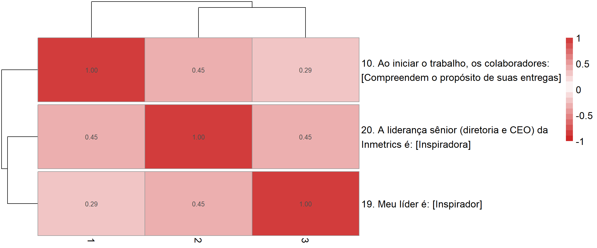
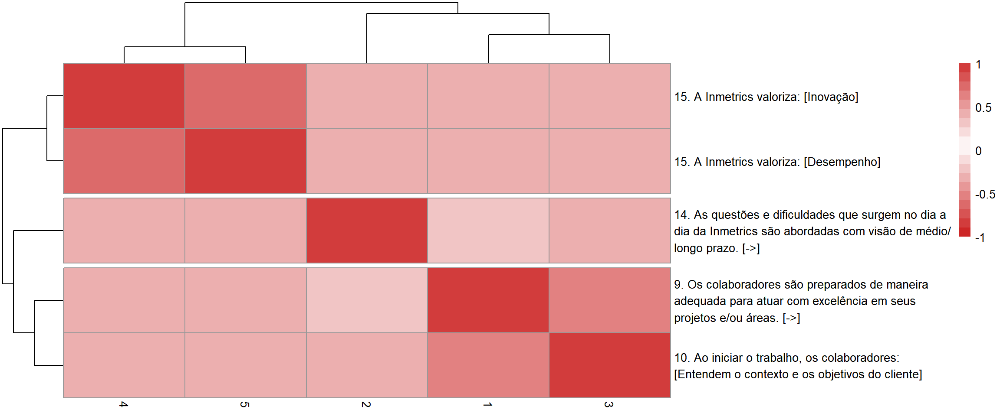
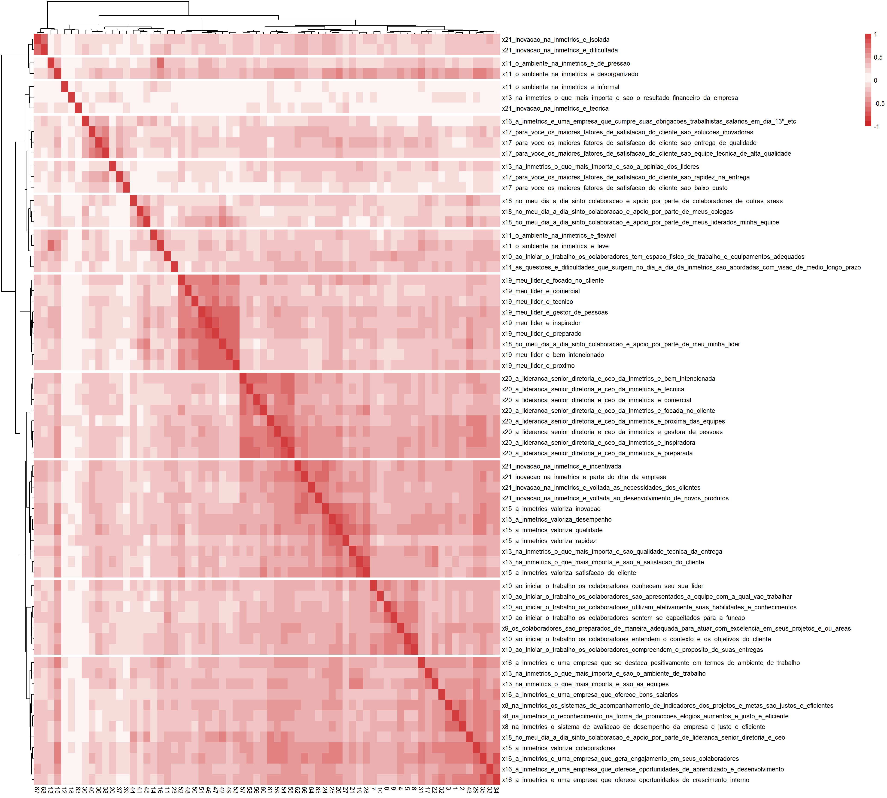
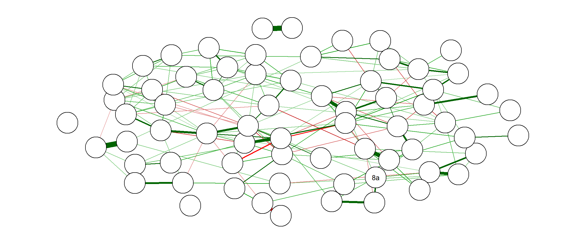

Capítulo 4 Construtos
4.1 Rapidez Antes de Qualidade
O construto “Rapidez Antes de Qualidade” é medido pelas questões:

4.1.1 Análise Fatorial
| MR1 | MR2 | |
|---|---|---|
| x9_os_colaboradores_sao_preparados_de_maneira_adequada_para_atuar_com_excelencia_em_seus_projetos_e_ou_areas | 0.2861345 | 0.6364744 |
| x14_as_questoes_e_dificuldades_que_surgem_no_dia_a_dia_da_inmetrics_sao_abordadas_com_visao_de_medio_longo_prazo | 0.3606958 | 0.3890130 |
| x10_ao_iniciar_o_trabalho_os_colaboradores_entendem_o_contexto_e_os_objetivos_do_cliente | 0.1985977 | 0.8535682 |
| x15_a_inmetrics_valoriza_inovacao | 0.8612804 | 0.2465907 |
| x15_a_inmetrics_valoriza_desempenho | 0.8073256 | 0.3145878 |
4.1.2 Diagnóstico e Qualidade

| x15_a_inmetrics_valoriza_inovacao | x15_a_inmetrics_valoriza_desempenho | Total | ||||
|---|---|---|---|---|---|---|
| Discordo totalmente |
Discordo parcialmente |
Não concordo nem discordo |
Concordo parcialmente |
Concordo totalmente | ||
| Discordo totalmente | 8 | 0 | 3 | 1 | 1 | 13 |
|
Discordo parcialmente |
0 | 13 | 3 | 7 | 1 | 24 |
|
Não concordo nem discordo |
3 | 10 | 28 | 33 | 8 | 82 |
|
Concordo parcialmente |
0 | 10 | 19 | 113 | 29 | 171 |
| Concordo totalmente | 0 | 3 | 6 | 39 | 184 | 232 |
| Total | 11 | 36 | 59 | 193 | 223 | 522 | χ2=576.303 · df=16 · Cramer’s V=0.525 · Fisher’s p=0.000 |
| x21_inovacao_na_inmetrics_e_parte_do_dna_da_empresa | x18_no_meu_dia_a_dia_sinto_colaboracao_e_apoio_por_parte_de_lideranca_senior_diretoria_e_ceo | Total | ||||
|---|---|---|---|---|---|---|
| Discordo totalmente |
Discordo parcialmente |
Não concordo nem discordo |
Concordo parcialmente |
Concordo totalmente | ||
| Discordo totalmente | 9 | 4 | 3 | 2 | 3 | 21 |
|
Discordo parcialmente |
6 | 8 | 5 | 13 | 3 | 35 |
|
Não concordo nem discordo |
15 | 22 | 51 | 17 | 14 | 119 |
|
Concordo parcialmente |
11 | 21 | 36 | 42 | 40 | 150 |
| Concordo totalmente | 4 | 8 | 28 | 31 | 50 | 121 |
| Total | 45 | 63 | 123 | 105 | 110 | 446 | χ2=92.180 · df=16 · Cramer’s V=0.227 · Fisher’s p=0.000 |
|
sample(categs_likert_ordenados, 522, replace = TRUE) |
sample(categs_likert_ordenados, 522, replace = TRUE) |
Total | ||||
|---|---|---|---|---|---|---|
|
Concordo parcialmente |
Concordo totalmente |
Discordo parcialmente |
Discordo totalmente |
Não concordo nem discordo |
||
|
Concordo parcialmente |
23 | 17 | 18 | 12 | 22 | 92 |
| Concordo totalmente | 24 | 20 | 14 | 18 | 23 | 99 |
|
Discordo parcialmente |
21 | 29 | 19 | 22 | 18 | 109 |
| Discordo totalmente | 18 | 27 | 22 | 17 | 27 | 111 |
|
Não concordo nem discordo |
18 | 11 | 26 | 33 | 23 | 111 |
| Total | 104 | 104 | 99 | 102 | 113 | 522 | χ2=26.541 · df=16 · Cramer’s V=0.113 · p=0.047 |
4.2 Exploração

